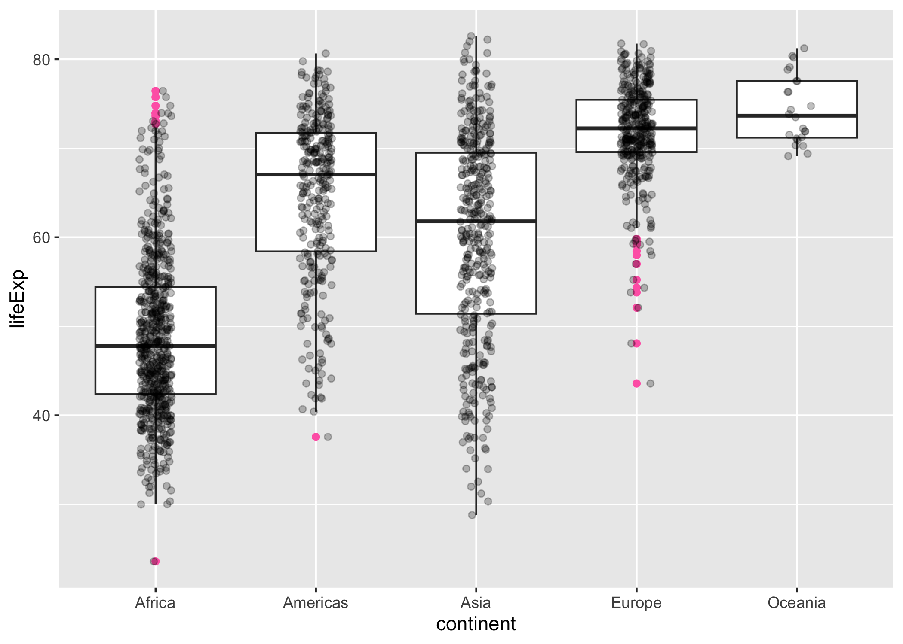

The is a data package with an excerpt from the Gapminder data. The main object in this package is the gapminder data frame or “tibble”. There are other goodies, such as the data in tab delimited form, a larger unfiltered dataset, premade color schemes for the countries and continents, and ISO 3166-1 country codes. The primary use case is for teaching and writing examples.
Quick look
Here we do a bit of data aggregation and plotting with the gapminder data:
library(gapminder)
library(dplyr)
library(ggplot2)
aggregate(lifeExp ~ continent, gapminder, median)
#> continent lifeExp
#> 1 Africa 47.7920
#> 2 Americas 67.0480
#> 3 Asia 61.7915
#> 4 Europe 72.2410
#> 5 Oceania 73.6650
gapminder %>%
filter(year == 2007) %>%
group_by(continent) %>%
summarise(lifeExp = median(lifeExp))
#> # A tibble: 5 × 2
#> continent lifeExp
#> <fct> <dbl>
#> 1 Africa 52.9
#> 2 Americas 72.9
#> 3 Asia 72.4
#> 4 Europe 78.6
#> 5 Oceania 80.7
ggplot(gapminder, aes(x = continent, y = lifeExp)) +
geom_boxplot(outlier.colour = "hotpink") +
geom_jitter(position = position_jitter(width = 0.1, height = 0), alpha = 1 / 4)